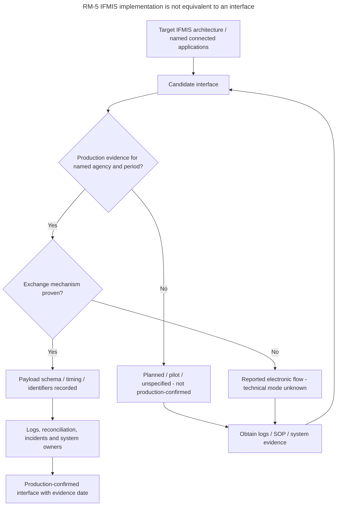

Research model RM-5
IFMIS implementation is not equivalent to an interface
What it is for. A method to grade a statement that two information systems exchange data: from a planned interface to an interface that is shown to work, with the evidence that each grade needs.
Why it is not in a chapter. It is a method. The register of interfaces in Reference B uses its own classification: carrier, stage of use and the check of both sides.

Notation: Mermaid · Download the code
Code
---
title: "RM-5 IFMIS implementation is not equivalent to an interface"
---
%% QUESTION THIS DIAGRAM ANSWERS: What must be proven to move from concept to confirmed system exchange?
%% SOURCES: [ROADMAP-MID] [CL2025-8] architecture assurance rubric
%% SCOPE: Reference view; not a verified deployed system interface.
%% READING: Arrows show possible evidence, authority or event dependencies, not a universal time order or verified API.
flowchart TB
ARCH["Target IFMIS architecture / named connected applications"] --> PROPOSE["Candidate interface"]
PROPOSE --> LIVE{"Production evidence for named agency and period?"}
LIVE -->|No| UNCONF["Planned / pilot / unspecified - not production-confirmed"]
LIVE -->|Yes| MECH{"Exchange mechanism proven?"}
MECH -->|Yes| DATA["Payload schema / timing / identifiers recorded"]
MECH -->|No| UK["Reported electronic flow - technical mode unknown"]
DATA --> TEST["Logs, reconciliation, incidents and system owners"]
TEST --> ASSURED["Production-confirmed interface with evidence date"]
UNCONF --> REVIEW["Obtain logs / SOP / system evidence"]
UK --> REVIEW
REVIEW --> PROPOSE